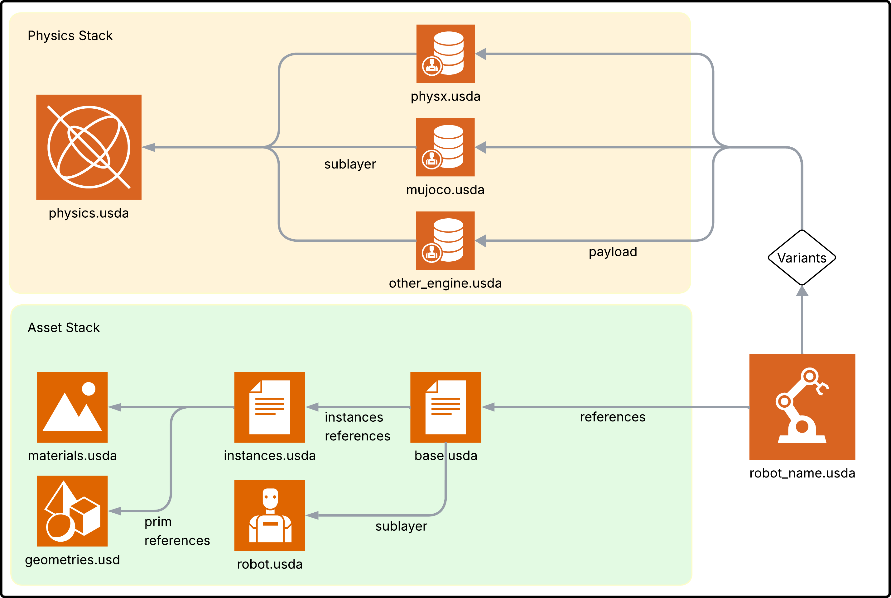
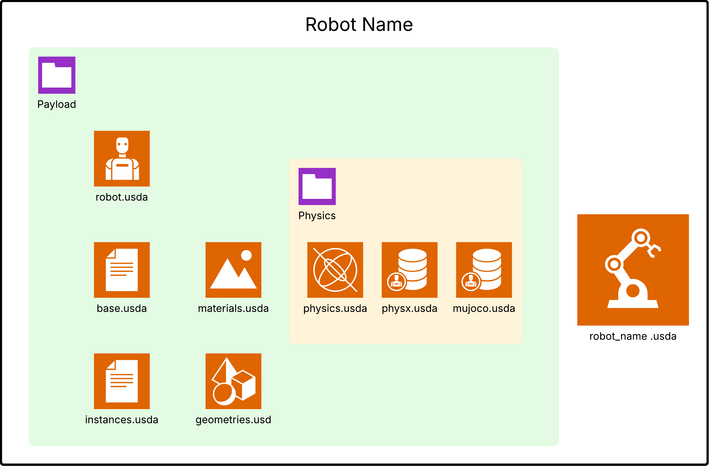
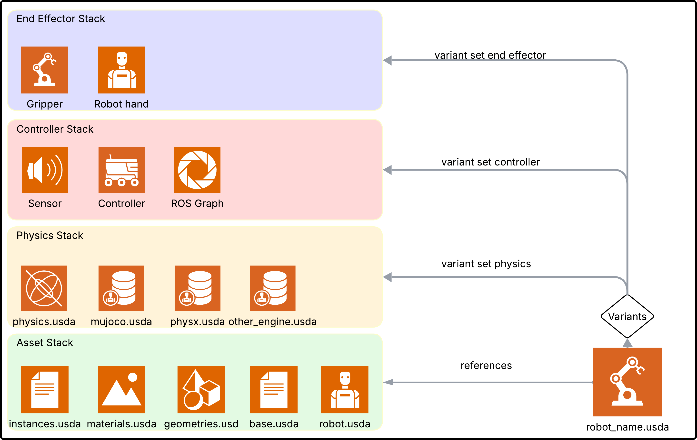
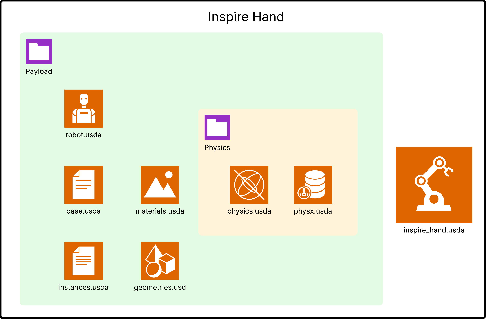
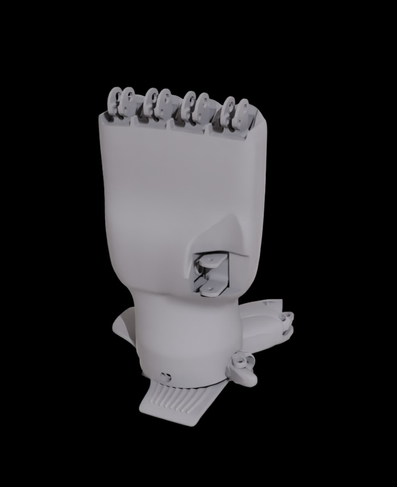
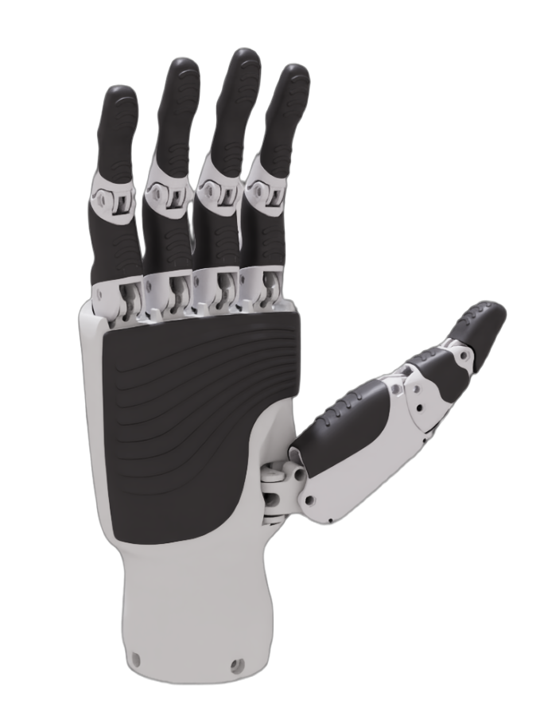
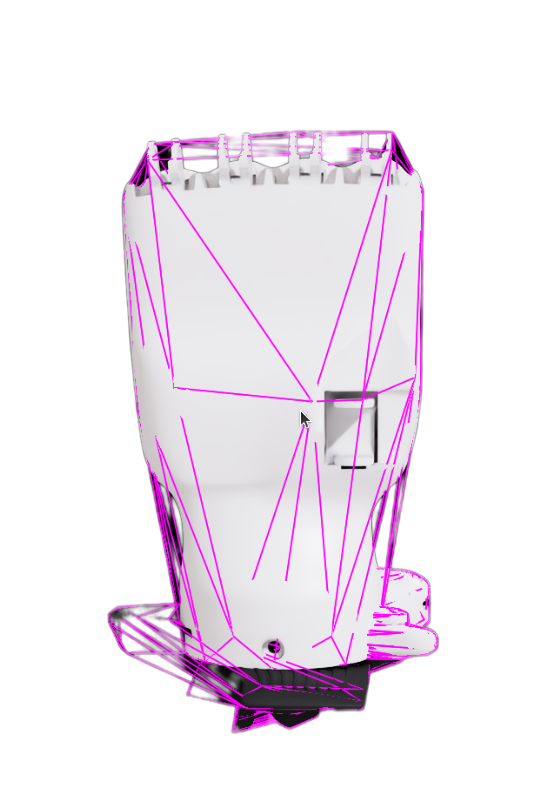
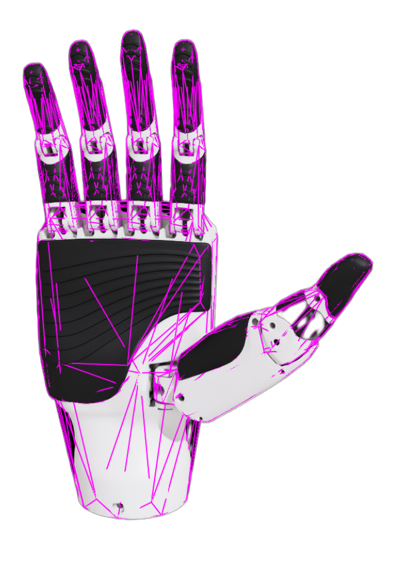

Asset Structure#
Isaac Sim에서 임포트된 에셋은 관리, 재사용, 시뮬레이션을 쉽게 하기 위해 특정 구조로 구성됩니다. 각 에셋은 형상, 재료, 인스턴스, 물리, 로봇 등 여러 구성요소로 분류됩니다.
{kind=link}

The benefits of this structure are:#
검토를 위한 여러 파일로의 USD 구성요소 분리
충돌 방지를 위한 다양한 물리 엔진의 속성 분리
다양한 로봇 사용 사례를 위한 레이어, 페이로드, 변형 사용.
다양한 물리 엔진을 위한 다양한 물리 튜닝 파라미터 저장
ASCII 기반 구조는 손으로 읽고 편집하기 쉽고 버전 관리 시스템으로 변경 사항을 추적하기 쉽습니다.
Asset Source#
{kind=link}

이 스테이지의 에셋은 원본 파일 형식에서 임포트된 원시 형태를 나타냅니다. 일반적으로 다음과 같이 구성됩니다:
Base Asset (
base.usda): 로봇 어셈블리와 같은 에셋의 전체 구조적 계층을 포함합니다.Geometries (
geometries.usd): 개별 메시를 포함합니다.Instances (
instances.usda): 형상, 재료, 콜라이더를 시각 및 충돌 메시로 구성합니다.Materials (
materials.usda): 에셋에서 사용하는 재료의 모음.Physics (
physics.usd): 에셋의 USD / Newton 물리 설정을 포함합니다.MuJoCo (
mujoco.usda): 에셋의 MuJoCo 물리 설정을 포함합니다.PhysX (
physx.usda): 에셋의 PhysX 물리 설정을 포함합니다.Robot (
robot.usda): 에셋의 로봇 스키마를 포함합니다.
Expanding the asset structure#
{kind=link}

페이로드와 변형을 통해 에셋 구조를 확장하여 더 많은 기능을 포함할 수 있습니다. 이러한 기능의 예:
End Effectors Stacks (
gripper.usda): 시뮬레이션을 위한 그리퍼 또는 석션 컵과 같은 엔드 이펙터를 추가합니다.Control Stack (
control.usd): 컨트롤러를 로봇에 연결하기 위한 특정 제어 파라미터를 추가합니다.ROS Integration Stack (
ros.usd): ROS 토픽 발행 및 구독을 위한 로봇의 ROS OmniGraph를 구성합니다.
Guidelines#
소스 에셋은 다운스트림 수정 사항을 잃지 않고 원활하게 다시 임포트할 수 있도록 변경되지 않은 상태를 유지해야 합니다.
일관성이 중요합니다. 구조적 계층, 명명 규칙, 부품 어셈블리가 그대로 유지되어야 합니다.
Transformation#
이 스테이지는 에셋을 재구성하고 최적화하여 시뮬레이션을 위해 준비합니다. 이 변환은 소스 에셋에 중첩된 강체나 시뮬레이션 요구 사항을 충족하지 않는 복잡한 구조가 포함된 경우에 필요합니다. 구조는 강체가 기본 목록으로 구성되어 평탄화되어야 하고, 메시는 총 수를 최소화하기 위해 단순화되어야 합니다. 변환 프로세스:
구조 재구성:
시뮬레이션 구조 생성(예: 필요에 따라 시각 요소와 콜라이더 분리).
시뮬레이션 요구 사항에 맞게 계층 구조 조정.
메시 최적화:
단일 강체로 기능할 메시 병합.
재료 수를 단일 시각적 재료 목록으로 단순화.
성능 향상을 위해 인스턴스화 가능한 참조로 메시 정리 및 형식화.
참고
에셋 소스가 이미 시뮬레이션에 적합한 형식인 경우 이 단계 또는 일부를 건너뛸 수 있습니다.
Features#
이 스테이지에서 시뮬레이션 기능이 추가되며 각 기능은 변환된 에셋 위에 구축되는 별도의 경량 레이어로 정의됩니다. 이러한 기능에는 물리 설정, 센서 구성, 제어 그래프 등이 포함되지만 이에 국한되지 않습니다.
Workflow for Adding and Modifying Features#
새 빈 스테이지를 만들거나 기존 기능 스테이지를 엽니다.
최적화된 에셋(
asset_sim_optimized.usd)을 서브레이어로 추가합니다.루트 레이어를 수정하여 기능을 추가/수정합니다.
저장 전에 스테이지 구성에서 서브레이어(최적화된 에셋)를 제거하거나 비활성화합니다.
기능을 페이로드로 최종 에셋에 추가합니다. 선택적으로 목록에서 선택하여 다양한 기능 세트 간에 빠르게 전환할 수 있도록 Variant set을 구성할 수 있습니다.
Example Features#
Physics (
physics.usd): 강체, 조인트, 아티큘레이션을 추가합니다.MuJoCo (
mujoco.usda): MuJoCo 물리 특정 설정을 추가합니다.Control Graphs (
asset_control.usd): 시뮬레이션을 위한 제어 기능을 추가합니다.ROS Integration (
asset_ros.usd): ROS OmniGraph 기능을 구성합니다.Gripper (
robotiq_2f_140.usda): 시뮬레이션을 위한 그리퍼 기능을 추가합니다.
Composition of Final Asset#
최종 구성된 에셋은 시뮬레이션에 필요한 모든 구성요소를 통합하는 asset.usd 파일로 표현됩니다. 이는 다음 구성 프로세스를 통해 이루어집니다:
- Sublayers:
중립 물리 에셋(
physics.usda)은 핵심 물리 설정을 제공하기 위해physx.usda와mujoco.usda의 서브레이어로 포함됩니다.
- Payloads:
엔드 이펙터(
gripper.usda)와 제어 그래프(asset_control.usda)와 같은 기능이 페이로드로 동적으로 추가됩니다. 이를 통해 구성요소를 유연하고 효율적으로 로드할 수 있습니다.
- References:
물리 설정(
base.usda)이 기본 프림에 참조로 추가되어 일관된 시뮬레이션 준비 구성을 보장합니다.
- Variants:
에셋을 복제하지 않고 다양한 물리 설정을 활성화하기 위해
physx.usda또는mujoco.usda파일에서 Variant를 구성할 수 있습니다.
이 모듈식 접근 방식은 최종 에셋 파일이 경량이고 유연하여 다양한 시뮬레이션 시나리오에 쉽게 적응할 수 있도록 합니다.
에셋을 체계적으로 유지 관리하려면 위에 설명된 구조와 가이드라인을 따르는 것을 권장합니다. 이렇게 하면 에셋 생성 프로세스를 간소화하고 전반적인 시뮬레이션 성능을 향상시키는 데 도움이 됩니다.
또한 에셋을 폴더에 체계적으로 구성하여 소스 에셋은 자체 폴더에, 모든 기능은 features 폴더에 보관하고 최종 에셋은 루트 폴더에 저장하는 것을 권장합니다. 기본적으로 Isaac Sim의 로봇 임포터는 이 구조를 따릅니다.
Robot Schema#
Robot Schema는 시뮬레이션 에셋 구조와 무관하게 로봇 구조를 설명하는 방법을 제공합니다. 로봇 스키마는 로봇 에셋의 서브레이어로 포함되어야 합니다.
Key Definitions and Notes#
Add-ons: - 기능 생성 중에 시뮬레이션 에셋을 임시 서브레이어로 사용하는 기능. 이것을 Add-on이라고 합니다. 서브레이어 연결은 기능 에셋을 저장하기 전에 끊습니다.
Payloads: 메모리 오버헤드를 줄이고 모듈성을 향상시키는 동적으로 로드 가능한 구성요소.
File-by-file explanation for the Inspire Hand asset#
다음 안내는 각 소스 파일의 역할과 변경 사항을 작성할 위치를 설명합니다. 이것은 Isaac Sim 6.0에서 사용된 USD Asset Structure 3.0 가이드를 반영하며 에셋을 물리 런타임에 걸쳐 모듈식으로 유지하는 데 도움이 됩니다.
{kind=link}

geometries.usd- 메시 데이터만성능을 위해 바이너리 USD에 메시 토폴로지와 정점 데이터를 저장합니다.
물리 튜닝, 로봇 메타데이터, 런타임 특정 속성을 포함하면 안 됩니다.
형상 자체가 변경될 때 이 레이어를 편집하세요(예: CAD 업데이트 후).

예시:
def Mesh "right_thumb_1" { int[] faceVertexCounts = [4, 4, 4] int[] faceVertexIndices = [0, 1, 2, 3, 4, 5, 6, 7, 8, 9, 10, 11] point3f[] points = [(0, 0, 0), (0.01, 0, 0), (0.01, 0.02, 0), (0, 0.02, 0)] }
materials.usda- 재료 정의재료 프림과 셰이더 바인딩을 포함합니다(예: MDL 셰이더 속성).
형상 및 시뮬레이션 로직과 분리하여 외관 개발을 유지합니다.
구조나 물리를 건드리지 않고 시각적 외관을 변경할 때 이 파일을 편집하세요.

예시:
def Material "Plastic_ABS" { prepend token outputs:mdl:surface.connect = </Materials/Plastic_ABS/Shader.outputs:out> def Shader "Shader" { token info:implementationSource = "sourceAsset" asset info:mdl:sourceAsset = @../Materials/Plastic_ABS.mdl@ token info:mdl:sourceAsset:subIdentifier = "Plastic_ABS" color3f inputs:diffuse_tint = (1, 1, 1) } }
instances.usda- 메시, 재료, 콜라이더 어셈블리geometries.usd의 메시 프림을 참조하고 재료를 적용합니다.시각 대 충돌 메시 구성 및 충돌 근사를 정의하는 일반적인 장소.
콜라이더 표현 선택(예: 볼록 껍질 대 메시)을 위해 이 파일을 편집하세요.

예시:
def Xform "right_thumb_1" ( prepend references = @geometries.usd@</Geometries/right_thumb_1> ) { over "right_thumb_1" ( apiSchemas = ["PhysicsCollisionAPI", "PhysicsMeshCollisionAPI"] ) { token physics:approximation = "convexHull" token purpose = "guide" } }
robot.usda- 로봇 스키마 및 메타데이터Isaac 로봇 스키마 및 로봇 수준 메타데이터(설명, 네임스페이스, 조인트 관계)를 적용합니다.
시각 및 물리 구성과 분리하여 로봇 정체성 및 메타데이터를 유지합니다.
메시나 역학이 아닌 로봇 메타데이터 및 스키마 관계를 위해 이 파일을 편집하세요.
예시:
over "inspire_hand" ( prepend apiSchemas = ["IsaacRobotAPI"] ) { string isaac:description = "Inspire RH56DFX hand" string isaac:namespace = "inspire_hand" rel isaac:physics:robotJoints = [</inspire_hand/Physics/right_thumb_1_joint>] }
base.usda- 시뮬레이션 준비 구조변환된 운동학적 계층을 구성하고 재사용 가능한 인스턴스를 참조합니다.
다운스트림 시뮬레이션 기능 레이어에서 사용하는 변환과 구조를 정의합니다.
시뮬레이션 호환성을 위한 계층 구조 재구성 시 이 레이어를 편집하세요.

예시:
def Xform "right_thumb_1" { quatf xformOp:orient = (1, 0, 0, 0) float3 xformOp:scale = (1, 1, 1) double3 xformOp:translate = (0.01696, 0.02045, 0.0667) uniform token[] xformOpOrder = ["xformOp:translate", "xformOp:orient", "xformOp:scale"] def Xform "instance" ( instanceable = true prepend references = @instances.usda@</Instances/right_thumb_1> ) { } }
physics.usda- USD / Newton 물리 설정공통 물리 설정 정의: 강체, 질량, 조인트, 아티큘레이션 구조.
특수화된 런타임이 구축하는 중립 물리 레이어 역할.
런타임에 걸쳐 적용되어야 하는 핵심 물리 동작을 위해 이 파일을 편집하세요.
예시:
def PhysicsRevoluteJoint "right_thumb_1_joint" ( prepend apiSchemas = ["PhysicsDriveAPI:angular", "PhysicsJointStateAPI:angular"] ) { uniform token physics:axis = "Z" prepend rel physics:body0 = </inspire_hand/r_base_link> prepend rel physics:body1 = </inspire_hand/right_thumb_1> float physics:lowerLimit = 0 float physics:upperLimit = 75 }
mujoco.usda- MuJoCo 물리 설정MuJoCo 특정 속성 및 튜닝 값을 보유합니다.
PhysX 또는 중립 물리와 충돌하지 않도록 MuJoCo 동작을 분리합니다.
MuJoCo 런타임 튜닝에만 이 파일을 편집하세요.
예시:
over "right_thumb_1_joint" { custom string mujoco:actuatorType = "position" custom float mujoco:damping = 0.2 custom float mujoco:frictionloss = 0.01 }
physx.usda- PhysX 물리 설정PhysX 특정 API 및 튜닝을 보유합니다(예: 모방 설정 또는 솔버 관련 속성).
일반적으로 중립 물리 레이어를 구성하고 PhysX 전용 세부 정보를 추가합니다.
공유 크로스 엔진 동작이 아닌 PhysX 런타임 동작을 위해 이 파일을 편집하세요.
예시:
over "right_thumb_4_joint" ( prepend apiSchemas = ["PhysxJointAPI", "PhysxMimicJointAPI:rotX"] ) { float physxMimicJoint:rotX:gearing = -0.7508 float physxMimicJoint:rotX:naturalFrequency = 25 rel physxMimicJoint:rotX:referenceJoint = </inspire_hand/Physics/right_thumb_3_joint> }
interface.usda- 최종 구성된 인터페이스 에셋소비자가 시뮬레이션 장면에서 로드하는 최종 로봇 프림을 노출합니다.
참조로 기본 구조를 구성하고 페이로드/변형을 통해 선택적 기능을 추가합니다.
구성 진입점과 변형 기반 기능 선택을 제어하기 위해 이 파일을 편집하세요.
예시:
def Xform "inspire_hand" ( prepend references = @payloads/base.usda@ append variantSets = "Physics" ) { variantSet "Physics" = { "none" { } "physics" ( prepend payload = @payloads/Physics/physics.usda@ ) { } "physx" ( prepend payload = @payloads/Physics/physx.usda@ ) { } } }
{kind=link}
{kind=link}
{kind=link}
{kind=link}
실용적인 경험 법칙:
형상이나 콜라이더를 변경해야 하나요?
geometries.usd또는instances.usda에서 시작하세요.로봇 설명/스키마 링크를 변경해야 하나요?
robot.usda를 사용하세요.모든 엔진의 역학을 변경해야 하나요?
physics.usd를 사용하세요.엔진 특정 튜닝이 필요하나요?
mujoco.usda또는physx.usda를 사용하세요.선택적 기능이나 런타임 전환이 필요하나요?
asset.usd페이로드와 변형을 구성하세요.